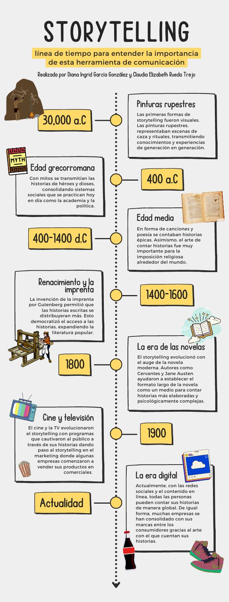

Desde tiempos inmemoriales, las historias han sido el hilo conductor que une a la humanidad. ¿Pero qué hace que una historia sea tan poderosa? En el mundo del diseño digital, el storytelling es mucho más que contar anécdotas; es una herramienta estratégica para crear conexiones, guiar emociones y construir experiencias.
Conoce más sobre la evolución del storytelling en la siguiente infografía:
Todo comienza con una necesidad básica de los seres humanos: comunicar. A lo largo de la historia, las historias no solo han transmitido información, sino que han sido el medio principal para enseñar, conectar y cambiar mentes. Desde las pinturas rupestres hasta los videojuegos modernos, cada medio ha adaptado la narrativa a su contexto, pero la esencia sigue siendo la misma. En el diseño digital, esa necesidad persiste: ¿cómo comunicar un mensaje de manera efectiva? La respuesta está en crear una experiencia inmersiva, donde el usuario no solo consuma información, sino que viva una historia.
Toda historia tiene componentes esenciales. En el storytelling para el diseño digital, también se deben tener en cuenta:
En el diseño digital, el storytelling no solo se aplica al contenido, sino también a la experiencia del usuario (UX). A medida que el usuario interactúa con una interfaz, lo ideal es que cada elemento lo guíe de manera coherente por un recorrido lógico y emocional. Por ejemplo, cuando diseñamos una página web, la historia no está solo en las palabras escritas. Está en los colores, en las transiciones, en los llamados a la acción. Cada paso que el usuario da es como un capítulo en una historia más grande.
Para los estudiantes de diseño digital, el storytelling es una herramienta fundamental. A la hora de diseñar una aplicación, una campaña publicitaria o una página web, pregúntate: ¿Qué historia estoy contando?. Define el conflicto, construye personajes (usuarios) y lleva a tu audiencia hacia una solución clara y satisfactoria. El storytelling no solo hará tus proyectos más atractivos, sino también más memorables y efectivos para quienes interactúan con ellos.
El storytelling está en el corazón de todo buen diseño digital. No importa si estás trabajando en una interfaz, en una campaña publicitaria o en un logotipo. Si puedes contar una historia que conecte emocionalmente con tu audiencia, tendrás una ventaja poderosa. Todo diseño cuenta una historia, y tú eres su narrador.
{kind=link}